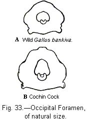
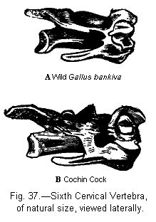
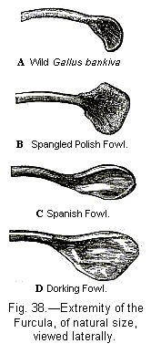

BRIEF DESCRIPTIONS OF THE CHIEF BREEDS — ARGUMENTS IN FAVOUR OF THEIR DESCENT FROM SEVERAL SPECIES — ARGUMENTS IN FAVOUR OF ALL THE BREEDS HAVING DESCENDED FROM GALLUS BANKIVA — REVERSION TO THE PARENT-STOCK IN COLOUR — ANALOGOUS VARIATIONS — ANCIENT HISTORY OF THE FOWL — EXTERNAL DIFFERENCES BETWEEN THE SEVERAL BREEDS — EGGS — CHICKENS — SECONDARY SEXUAL CHARACTERS — WING-AND TAIL-FEATHERS, VOICE, DISPOSITION, ETC — OSTEOLOGICAL DIFFERENCES IN THE SKULL, VERTEBRÆ, ETC — EFFECTS OF USE AND DISUSE ON CERTAIN PARTS — CORRELATION OF GROWTH.
As some naturalists may not be familiar with the chief breeds of the fowl, it will be advisable to give a condensed description of them.1 From what I have read and seen of specimens brought from several quarters of the world, I believe that most of the chief kinds have been imported into England, but many sub-breeds are probably still unknown here. The following discussion on the origin of the various breeds and on their characteristic differences does not pretend to completeness, but may be of some interest to the naturalist. The classification of the breeds cannot, as far as I can see, be made natural. They differ from each other in different degrees, and do not afford characters in subordination to each other, by which they can be ranked in group under group. They seem all to have diverged by independent and different roads from a single type. Each chief breed includes differently coloured sub-varieties, most of which can be truly propagated, but it would be superfluous to describe them. I have classed the various crested fowls as sub-breeds under the Polish fowl; but I have great doubts whether this is a natural arrangement, showing true affinity or blood relationship. It is scarcely possible to avoid laying stress on the commonness of a breed; and if certain foreign sub-breeds had been largely kept in this country they would perhaps have been raised to the rank of main-breeds. Several breeds are abnormal in character; that is, they differ in certain points from all wild Gallinaceous birds. At first I made a division of the breeds into normal and abnormal, but the result was wholly unsatisfactory.
1. GAME BREED.—This may be considered as the typical breed, as it deviates only slightly from the wild Gallus bankiva, or, as perhaps more correctly named, ferrugineus. Beak strong; comb single and upright. Spurs long and sharp. Feathers closely appressed to the body. Tail with the normal number of 14 feathers. Eggs often pale buff. Disposition indomitably courageous, exhibited even in the hens and chickens. An unusual number of differently coloured varieties exist, such as black and brown-breasted reds, duckwings, blacks, whites, piles, etc., with their legs of various colours.
2. MALAY BREED.—Body of great size, with head, neck, and legs elongated; carriage erect; tail small, sloping downwards, generally formed of 16 feathers; comb and wattle small; ear-lobe and face red; skin yellowish; feathers closely appressed to the body; neck-hackles short, narrow, and hard. Eggs often pale buff. Chickens feather late. Disposition savage. Of Eastern origin.
3. COCHIN, OR SHANGAI BREED.—Size great; wing feathers short, arched, much hidden in the soft downy plumage; barely capable of flight; tail short, generally formed of 16 feathers, developed at a late period in the young males; legs thick, feathered; spurs short, thick; nail of middle toe flat and broad; an additional toe not rarely developed; skin yellowish. Comb and wattle well developed. Skull with deep medial furrow; occipital foramen, sub-triangular, vertically elongated. Voice peculiar. Eggs rough, buff-coloured. Disposition extremely quiet. Of Chinese origin.
4. DORKING BREED.—Size great; body square, compact; feet with an additional toe; comb well developed, but varies much in form; wattles well developed; colour of plumage various. Skull remarkably broad between the orbits. Of English origin.
The white Dorking may be considered as a distinct sub-breed, being a less massive bird.
5. SPANISH BREED (fig. 30).—Tall, with stately carriage; tarsi long; comb single, deeply serrated, of immense size; wattles largely developed; the large ear-lobes and sides of face white. Plumage black glossed with green. Do not incubate. Tender in constitution, the comb being often injured by frost. Eggs white, smooth, of large size. Chickens feather late but the young cocks show their masculine characters, and crow at an early age. Of Mediterranean origin.
The Andalusians may be ranked as a sub-breed: they are of a slaty-blue colour, and their chickens are well feathered. A smaller, short-legged Dutch sub-breed has been described by some authors as distinct.
6. HAMBURGH BREED (fig 31).—Size moderate; comb flat, produced backwards, covered with numerous small points; wattle of moderate dimensions; ear lobe white; legs blueish, thin. Do not incubate. Skull, with the tips of the ascending branches of the premaxillary and with the nasal bones standing a little separate from each other; anterior margin of the frontal bones less depressed than usual.
There are two sub-breeds; the spangled Hamburgh, of English origin, with the tips of the feathers marked with a dark spot; and the pencilled Hamburgh, of Dutch origin, with dark transverse lines across each feather, and with the body rather smaller. Both these sub-breeds include gold and silver varieties, as well as some other sub-varieties. Black Hamburghs have been produced by a cross with the Spanish breed.
7. CRESTED OR POLISH BREED (fig 32).—Head with a large, rounded crest of feathers, supported on a hemispherical protuberance of the frontal bones, which includes the anterior part of the brain. The ascending branches of premaxillary bones and the inner nasal processes are much shortened. The orifice of the nostrils raised and crescentic. Beak short. Comb absent, or small and of crescentic shape; wattles either present or replaced by a beard-like tuft of feathers. Legs leaden-blue. Sexual differences appear late in life. Do not incubate. There are several beautiful varieties which differ in colour and slightly in other respects.
The following sub-breeds agree in having a crest, more or less developed, with the comb, when present, of crescentic shape. The skull presents nearly the same remarkable peculiarities of structure as in the true Polish fowl.
Sub-breed (a) Sultans.—A Turkish breed, resembling white Polish fowls with a large crest and beard with short and well-feathered legs. The tail is furnished with additional sickle feathers. Do not incubate.2
Sub-breed (b) Ptarmigans.—An inferior breed closely allied to the last, white, rather small, legs much feathered, with the crest pointed; comb small, cupped; wattles small.
Sub-breed (c) Ghoondooks.—Another Turkish breed having an extraordinary appearance; black and tailless; crest and beard large; legs feathered. The inner processes of the two nasal bones come into contact with each other, owing to the complete abortion of the ascending branches of the premaxillaries. I have seen an allied white, tailless breed from Turkey.
Sub-breed (d) Crève-cœur.—A French breed of large size, barely capable of flight, with short black legs, head crested, comb produced into two points or horns, sometimes a little branched like the horns of a stag; both beard and wattles present. Eggs large. Disposition quiet.3
Sub-breed (e) Horned fowl.—With a small crest; comb produced into two great points, supported on two bony protuberances.
Sub-breed (f) Houdan.—A French breed; of moderate size, short-legged with five toes, well developed; plumage invariably mottled with black, white, and straw-yellow; head furnished with a crest, on a triple comb placed transversely; both wattles and beard present.4
Sub-breed (g) Guelderlands.—No comb, head said to be surmounted by a longitudinal crest of soft velvety feathers; nostrils said to be crescentic; wattles well developed; legs feathered; colour black. From North America. The Breda fowl seems to be closely allied to the Guelderland.
8. BANTAM BREED.—Originally from Japan5 characterised by small size alone; carriage bold and erect. There are several sub-breeds, such as the Cochin, Game, and Sebright Bantams, some of which have been recently formed by various crosses. The Black Bantam has a differently shaped skull, with the occipital foramen like that of the Cochin fowl.
9. RUMPLESS FOWLS.—These are so variable in character6 that they hardly deserve to be called a breed. Any one who will examine the caudal vertebræ will see how monstrous the breed is.
10. CREEPERS OR JUMPERS.—These are characterised by an almost monstrous shortness of legs, so that they move by jumping rather than by walking; they are said not to scratch up the ground. I have examined a Burmese variety, which had a skull of rather unusual shape.
11. FRIZZLED OR CAFFRE FOWLS.—Not uncommon in India, with the feathers curling backwards, and with the primary feathers of the wing and tail imperfect; periosteum of bones black.
12. SILK FOWLS.—Feathers silky, with the primary wing and tail-feathers imperfect; skin and periosteum of bones black; comb and wattles dark leaden-blue; ear-lappets tinged with blue; legs thin, often furnished with an additional toe. Size rather small.
13. SOOTY FOWLS.—An Indian breed, having the peculiar appearance of a white bird smeared with soot, with black skin and periosteum. The hens alone are thus characterised.
From this synopsis we see that the several breeds differ considerably, and they would have been nearly as interesting for us as pigeons, if there had been equally good evidence that all had descended from one parent-species. Most fanciers believe that they are descended from several primitive stocks. The Rev. E. S. Dixon7 argues strongly on this side of the question; and one fancier even denounces the opposite conclusion by asking, "Do we not perceive pervading this spirit, the spirit of the Deist?" Most naturalists, with the exception of a few, such as Temminck, believe that all the breeds have proceeded from a single species; but authority on such a point goes for little. Fanciers look to all parts of the world as the possible sources of their unknown stocks; thus ignoring the laws of geographical distribution. They know well that the several kinds breed truly even in colour. They assert, but, as we shall see, on very weak grounds, that most of the breeds are extremely ancient. They are strongly impressed with the great difference between the chief kinds, and they ask with force, can differences in climate, food, or treatment have produced birds so different as the black stately Spanish, the diminutive elegant Bantam, the heavy Cochin with its many peculiarities, and the Polish fowl with its great top-knot and protuberant skull? But fanciers, whilst admitting and even overrating the effects of crossing the various breeds, do not sufficiently regard the probability of the occasional birth, during the course of centuries, of birds with abnormal and hereditary peculiarities; they overlook the effects of correlation of growth—of the long-continued use and disuse of parts, and of some direct result from changed food and climate, though on this latter head I have found no sufficient evidence; and lastly, they all, as far as I know, entirely overlook the all-important subject of unconscious or unmethodical selection, though they are well aware that their birds differ individually and that by selecting the best birds for a few generations they can improve their stocks.
An amateur writes8 as follows: "The fact that poultry have until lately received but little attention at the hands of the fancier, and been entirely confined to the domains of the producer for the market, would alone suggest the improbability of that constant and unremitting attention having been observed in breeding, which is requisite to the consummating in the offspring of any two birds transmittable forms not exhibited by the parents." This at first sight appears true. But in a future chapter on Selection, abundant facts will be given showing not only that careful breeding, but that actual selection was practised during ancient periods, and by barely civilised races of man. In the case of the fowl I can adduce no direct facts showing that selection was anciently practised; but the Romans at the commencement of the Christian era kept six or seven breeds, and Columella "particularly recommends as the best, those sorts that have five toes and white ears."9 In the fifteenth century several breeds were known and described in Europe; and in China, at nearly the same period, seven kinds were named. A more striking case is that at present, in one of the Philippine Islands, the semi-barbarous inhabitants have distinct native names for no less than nine sub-breeds of the Game fowl.10 Azara,11 who wrote towards the close of the last century, states that in the interior parts of South America, where I should not have expected that the least care would have been taken of poultry, a black-skinned and black-boned breed is kept, from being considered fertile and its flesh good for sick persons. Now every one who has kept poultry knows how impossible it is to keep several breeds distinct unless the utmost care be taken in separating the sexes. Will it then be pretended that those persons who, in ancient times and in semi-civilised countries took pains to keep the breeds distinct, and who therefore valued them, would not occasionally have destroyed inferior birds and occasionally have preserved their best birds? This is all that is required. It is not pretended that any one in ancient times intended to form a new breed, or to modify an old breed according to some ideal standard of excellence. He who cared for poultry would merely wish to obtain, and afterwards to rear, the best birds which he could; but this occasional preservation of the best birds would in the course of time modify the breed, as surely, though by no means as rapidly, as does methodical selection at the present day, If one person out of a hundred or out of a thousand attended to the breeding of his birds, this would be sufficient; for the birds thus tended would soon become superior to others, and would form a new strain; and this strain would, as explained in the last chapter, slowly have its characteristic differences augmented, and at last be converted into a new sub-breed or breed. But breeds would often be for a time neglected and would deteriorate; they would, however, partially retain their character, and afterwards might again come into fashion and be raised to a standard of perfection higher than their former standard; as has actually occurred quite recently with Polish fowls. If, however, a breed were utterly neglected, it would become extinct, as has recently happened with one of the Polish sub-breeds. Whenever in the course of past centuries a bird appeared with some slight abnormal structure, such as with a lark-like crest on its head, it would probably often have been preserved from that love of novelty which leads some persons in England to keep rumpless fowls, and others in India to keep frizzled fowls. And after a time any such abnormal appearance would be carefully preserved, from being esteemed a sign of the purity and excellence of the breed; for on this principle the Romans eighteen centuries ago valued the fifth toe and the white ear-lobe in their fowls.
Thus from the occasional appearance of abnormal characters, though at first only slight in degree; from the effects of the use and the disuse of parts; possibly from the direct effects of changed climate and food; from correlation of growth; from occasional reversions to old and long-lost characters; from the crossing of breeds, when more than one had been formed; but, above all, from unconscious selection carried on during many generations, there is no insuperable difficulty, to the best of my judgment, in believing that all the breeds have descended from some one parent-source. Can any single species be named from which we may reasonably suppose that all are descended? The Gallus bankiva apparently fulfils every requirement. I have already given as fair an account as I could of the arguments in favour of the multiple origin of the several breeds; and now I will give those in favour of their common descent from G. bankiva.
But it will be convenient first briefly to describe all the known species of Gallus. The G. sonneratii does not range into the northern parts of India; according to Colonel Sykes, it presents at different heights of the Ghauts, two strongly marked varieties, perhaps deserving to be called species. It was at one time thought to be the primitive stock of all our domestic breeds, and this shows that it closely approaches the common fowl in general structure; but its hackles partially consist of highly peculiar, horny laminæ, transversely banded with three colours; and I have met no authentic account of any such character having been observed in any domestic breed.13 This species also differs greatly from the common fowl, in the comb being finely serrated, and in the loins being destitute of true hackles. Its voice is utterly different. It crosses readily in India with domestic hens; and Mr. Blyth14 raised nearly 100 hybrid chickens; but they were tender and mostly died whilst young. Those which were reared were absolutely sterile when crossed inter se or with either parent. At the Zoological Gardens, however, some 'hybrids of the same parentage were not quite so sterile: Mr. Dixon, as he informed me, made, with Mr. Yarrell's aid, particular inquiries on this subject, and was assured that out of 50 eggs only five or six chickens were reared. Some, however, of these half-bred birds were crossed with one of their parents, namely, a Bantam, and produced a few extremely feeble chickens. Mr. Dixon also procured some of these same birds and crossed them in several ways, but all were more or less infertile. Nearly similar experiments have recently been tried on a great scale in the Zoological Gardens with almost the same result.15 Out of 500 eggs, raised from various first crosses and hybrids, between G. sonneratii, bankiva, and varius, only 12 chickens were reared, and of these only three were the product of hybrids inter se. From these facts, and from the above-mentioned strongly-marked differences in structure between the domestic fowl and G. sonneratii, we may reject this latter species as the parent of any domestic breed.
Ceylon possesses a fowl peculiar to the island, viz. G. stanleyii; this species approaches so closely (except in the colouring of the comb) to the domestic fowl, that Messrs. Layard and Kellaert16 would have considered it, as they inform me, as one of the parent-stocks, had it not been for its singularly different voice. This bird, like the last, crosses readily with tame hens, and even visits solitary farms and ravishes them. Two hybrids, a male and female, thus produced, were found by Mr. Mitford to be quite sterile: both inherited the peculiar voice of G. stanleyii. This species, then, may in all probability be rejected as one of the primitive stocks of the domestic fowl.
Java and the islands eastward as far as Flores are inhabited by G. varius (or furcatus), which differs in so many characters—green plumage, unserrated comb, and single median wattle—that no one supposes it to have been the parent of any one of our breeds; yet, as I am informed by Mr. Crawfurd,17 hybrids are commonly raised between the male G. varius and the common hen, and are kept for their great beauty, but are invariably sterile: this, however, was not the case with some bred in the Zoological Gardens. These hybrids were at one time thought to be specifically distinct, and were named G. æneus. Mr. Blyth and others believe that the G. temminckii18 (of which the history is not known) is a similar hybrid. Sir J. Brooke sent me some skins of domestic fowls from Borneo, and across the tail of one of these, as Mr. Tegetmeier observed, there were transverse blue bands like those which he had seen on the tail-feathers of hybrids from G. varius, reared in the Zoological Gardens. This fact apparently indicates that some of the fowls of Borneo have been slightly affected by crosses with G. varius, but the case may possibly be one of analogous variation. I may just allude to the G. giganteus, so often referred to in works on poultry as a wild species; but Marsden19 the first describer, speaks of it as a tame breed; and the specimen in the British Museum evidently has the aspect of a domestic variety.
The last species to be mentioned, namely, Gallus bankiva, has a much wider geographical range than the three previous species; it inhabits Northern India as far west as Sinde, and ascends the Himalaya to a height of 4000 ft.; it inhabits Burmah, the Malay peninsula, the Indo-Chinese countries, the Philippine Islands, and the Malayan archipelago as far eastward as Timor. This species varies considerably in the wild state. Mr. Blyth informs me that the specimens, both male and female, brought from near the Himalaya, are rather paler coloured than those from other parts of India; whilst those from the Malay peninsula and Java are brighter coloured than the Indian birds. I have seen specimens from these countries, and the difference of tint in the hackles was conspicuous. The Malayan hens were a shade redder on the breast and neck than the Indian hens. The Malayan males generally had a red ear-lappet, instead of a white one as in India; but Mr. Blyth has seen one Indian specimen without the white ear-lappet. The legs are leaden blue in the Indian, whereas they show some tendency to be yellowish in the Malayan and Javan specimens. In the former Mr. Blyth finds the tarsus remarkably variable in length. According to Temminck20 the Timor specimens differ as a local race from that of Java. These several wild varieties have not as yet been ranked as distinct species; if they should, as is not unlikely, be hereafter thus ranked, the circumstance would be quite immaterial as far as the parentage and differences of our domestic breeds are concerned. The wild G. bankiva agrees most closely with the black-breasted red Game-breed, in colouring and in all other respects, except in being smaller, and in the tail being carried more horizontally. But the manner in which the tail is carried is highly variable in many of our breeds, for, as Mr. Brent informs me, the tail slopes much in the Malays, is erect in the Games and some other breeds, and is more than erect in Dorkings, Bantams, etc. There is one other difference namely, that in G. bankiva, according to Mr. Blyth, the neck-hackles when first moulted are replaced during two or three months not by other hackles, as with our domestic poultry, but by short blackish feathers.21 Mr. Brent, however, has remarked that these black feathers remain in the wild bird after the development of the lower hackles, and appear in the domestic bird at the same time with them: so that the only difference is that the lower hackles are replaced more slowly in the wild than in the tame bird; but as confinement is known sometimes to affect the masculine plumage, this slight difference cannot be considered of any importance. It is a significant fact that the voice of both the male and female G. bankiva closely resembles, as Mr. Blyth and others have noted, the voice of both sexes of the common domestic fowl; but the last note of the crow of the wild bird is rather less prolonged. Captain Hutton, well known for his researches into the natural history of India, informs me that he has seen several crossed fowls from the wild species and the Chinese bantam; these crossed fowls bred freely with bantams, but unfortunately were not crossed inter se. Captain Hutton reared chickens from the eggs of the Gallus bankiva; and these, though at first very wild, afterwards became so tame that they would crowd round his feet. He did not succeed in rearing them to maturity; but as he remarks, "no wild gallinaceous bird thrives well at first on hard grain." Mr. Blyth also found much difficulty in keeping G. bankiva in confinement. In the Philippine Islands, however, the natives must succeed better, as they keep wild cocks to fight with their domestic game-birds.22 Sir Walter Elliot informs me that the hen of a native domestic breed of Pegu is undistinguishable from the hen of the wild G. bankiva; and the natives constantly catch wild cocks by taking tame cocks to fight with them in the woods.23 Mr. Crawfurd remarks that from etymology it might be argued that the fowl was first domesticated by the Malays and Javanese.24 It is also a curious fact, of which I have been assured by Mr. Blyth, that wild specimens of the Gallus bankiva, brought from the countries east of the Bay of Bengal, are far more easily tamed than those of India; nor is this an unparalleled fact, for, as Humboldt long ago remarked, the same species sometimes evinces a more tameable disposition in one country than in another. If we suppose that the G. bankiva was first tamed in Malaya and afterwards imported into India, we can understand an observation made to me by Mr. Blyth, that the domestic fowls of India do not resemble the wild G. bankiva of India more closely than do those of Europe.
From the extremely close resemblance in colour, general structure, and especially in voice, between Gallus bankiva and the Game fowl; from their fertility, as far as this has been ascertained, when crossed; from the possibility of the wild species being tamed, and from its varying in the wild state, we may confidently look at it as the parent of the most typical of all the domestic breeds, namely, the Game fowl. It is a significant fact, that almost all the naturalists in India, namely Sir W. Elliot, Mr. S. N. Ward, Mr. Layard, Mr. J. C. Jerdon, and Mr. Blyth,25 who are familiar with G. bankiva, believe that it is the parent of most or all our domestic breeds. But even if it be admitted that G. bankiva is the parent of the Game breed, yet it may be urged that other wild species have been the parents of the other domestic breeds; and that these species still exist, though unknown, in some country, or have become extinct. The extinction, however, of several species of fowls, is an improbable hypothesis, seeing that the four known species have not become extinct in the most ancient and thickly peopled regions of the East. There is, in fact, not one other kind of domesticated bird, of which the wild parent-form is unknown, that is become extinct. For the discovery of new, or the rediscovery of old species of Gallus, we must not look, as fanciers often look, to the whole world. The larger gallinaceous birds, as Mr. Blyth has remarked,26 generally have a restricted range: we see this well illustrated in India, where the genus Gallus inhabits the base of the Himalaya, and is succeeded higher up by Gallophasis, and still higher up by Phasianus. Australia, with its islands, is out of the question as the home for unknown species of the genus. It is, also, as improbable that Gallus should inhabit South America27 as that a humming-bird should be found in the Old World. From the character of the other gallinaceous birds of Africa, it is not probable that Gallus is an African genus. We need not look to the western parts of Asia, for Messrs. Blyth and Crawfurd, who have attended to this subject, doubt whether Gallus ever existed in a wild state even as far west as Persia. Although the earliest Greek writers speak of the fowl as a Persian bird, this probably merely indicates its line of importation. For the discovery of unknown species we must look to India, to the Indo-Chinese countries, and to the northern parts of the Malay Archipelago. The southern portion of China is the most likely country; but as Mr. Blyth informs me, skins have been exported from China during a long period, and living birds are largely kept there in aviaries, so that any native species of Gallus would probably have become known. Mr. Birch, of the British Museum, has translated for me passages from a Chinese Encyclopædia published in 1609, but compiled from more ancient documents, in which it is said that fowls are creatures of the West, and were introduced into the East (i.e. China) in a dynasty 1400 B.C. Whatever may be thought of so ancient a date, we see that the Indo-Chinese and Indian regions were formerly considered by the Chinese as the source of the domestic fowl. From these several considerations we must look to the present metropolis of the genus, namely, to the south-eastern parts of Asia, for the discovery of species which were formerly domesticated, but are now unknown in the wild state; and the most experienced ornithologists do not consider it probable that such species will be discovered.
In considering whether the domestic breeds are descended from one species, namely, G. bankiva, or from several, we must not quite overlook, though we must not exaggerate, the importance of the test of fertility. Most of our domestic breeds have been so often crossed, and their mongrels so largely kept, that it is almost certain, if any degree of infertility had existed between them, it would have been detected. On the other hand, the four known species of Gallus when crossed with each other, or when crossed, with the exception of G. bankiva, with the domestic fowl, produce infertile hybrids.
Finally, we have not such good evidence with fowls as with pigeons, of all the breeds having descended from a single primitive stock. In both cases the argument of fertility must go for something; in both we have the improbability of man having succeeded in ancient times in thoroughly domesticating several supposed species,—most of these supposed species being extremely abnormal as compared with their natural allies,—all being now either unknown or extinct, though the parent-form of no other domesticated bird has been lost. But in searching for the supposed parent-stocks of the various breeds of the pigeon, we were enabled to confine our search to species having peculiar habits of life; whilst with fowls there is nothing in their habits in any marked manner distinct from those of other gallinaceous birds. In the case of pigeons, I have shown that purely-bred birds of every race and the crossed offspring of distinct races frequently resemble, or revert to, the wild rock-pigeon in general colour and in each characteristic mark. With fowls we have facts of a similar nature, but less strongly pronounced, which we will now discuss.
Reversion and Analogous Variation.—Purely-bred Game, Malay, Cochin, Dorking, Bantam, and, as I hear from Mr. Tegetmeier, Silk fowls, may frequently or occasionally be met with, which are almost identical in plumage with the wild G. bankiva. This is a fact well deserving attention, when we reflect that these breeds rank amongst the most distinct. Fowls thus coloured are called by amateurs black-breasted reds. Hamburghs properly have a very different plumage; nevertheless, as Mr. Tegetmeier informs me, "the great difficulty in breeding cocks of the golden-spangled variety is their tendency to have black breasts and red backs. The males of white Bantams and white Cochins, as they come to maturity, often assume a yellowish or saffron tinge; and the longer neck hackles of black Bantam cocks,"28 when two or three years old, not uncommonly become ruddy; these latter Bantams occasionally "even moult brassy-winged, or actually red-shouldered." So that in these several cases we see a plain tendency to reversion to the hues of G. bankiva, even during the lifetime of the individual bird. With Spanish, Polish, pencilled Hamburgh, silver-spangled Hamburgh fowls, and with some other less common breeds, I have never heard of a black-breasted red bird having appeared.
From my experience with pigeons, I made the following crosses. I first killed all my own poultry, no others living near my house, and then procured, by Mr. Tegetmeier's assistance, a first-rate black Spanish cock, and hens of the following pure breeds,—white Game, white Cochin, silver-spangled Polish, silver-spangled Hamburgh, silver-pencilled Hamburgh, and white Silk. In none of these breeds is there a trace of red, nor when kept pure have I ever heard of the appearance of a red feather; though such an occurrence would perhaps not be very improbable with white Games and white Cochins. Of the many chickens reared from the above six crosses the majority were black, both in the down and in the first plumage; some were white, and a very few were mottled black and white. In one lot of eleven mixed eggs from the white Game and white Cochin by the black Spanish cock, seven of the chickens were white, and only four black. I mention this fact to show that whiteness of plumage is strongly inherited, and that the belief in the prepotent power in the male to transmit his colour is not always correct. The chickens were hatched in the spring, and in the latter part of August several of the young cocks began to exhibit a change, which with some of them increased during the following years. Thus a young male bird from the silver-spangled Polish hen was in its first plumage coal-black, and combined in its comb, crest, wattle, and beard, the characters of both parents; but when two years old the secondary wing-feathers became largely and symmetrically marked with white, and, wherever in G. bankiva the hackles are red, they were in this bird greenish-black along the shaft, narrowly bordered with brownish-black, and this again broadly bordered with very pale yellowish-brown; so that in general appearance the plumage had become pale-coloured instead of black. In this case, with advancing age there was a great change, but no reversion to the red colour of G. bankiva.
A cock with a regular rose comb derived either from the spangled or pencilled silver Hamburgh was likewise at first quite black; but in less than a year the neck-hackles, as in the last case, became whitish, whilst those on the loins assumed a decided reddish-yellow tint; and here we see the first symptom of reversion; this likewise occurred with some other young cocks, which need not here be described. It has also been recorded29 by a breeder, that he crossed two silver-pencilled Hamburgh hens with a Spanish cock, and reared a number of chickens, all of which were black, the cocks having golden and the hens brownish hackles; so that in this instance likewise there was a clear tendency to reversion.
Two young cocks from my white Game hen were at first snow white; of these, one subsequently assumed male orange-coloured hackles, chiefly on the loins, and the other an abundance of fine orange-red hackles on the neck, loins, and upper wing-coverts. Here again we have a more decided, though partial, reversion to the colours of G. bankiva. This second cock was in fact coloured like an inferior "pile Came cock;"—now this sub-breed can be produced, as I am informed by Mr. Tegetmeier, by crossing a black-breasted red Game cock with a white Game hen, and the "pile" sub-breed thus produced can afterwards be truly propagated. So that we have the curious fact of the glossy-black Spanish cock and the black-breasted red Game cock when crossed with white Game hens producing offspring of nearly the same colours.
I reared several birds from the white Silk hen by the Spanish cock: all were coal-black, and all plainly showed their parentage in having blackish combs and bones; none inherited the so-called silky feathers, and the non-inheritance of this character has been observed by others. The hens never varied in their plumage. As the young cocks grew old, one of them assumed yellowish-white hackles, and thus resembled in a considerable degree the cross from the Hamburgh hen; the other became a gorgeous bird, so much so that an acquaintance had it preserved and stuffed simply from its beauty. When stalking about it closely resembled the wild Gallus bankiva, but with the red feathers rather darker. On close comparison one considerable difference presented itself, namely, that the primary and secondary wing-feathers were edged with greenish-black, instead of being edged, as in G. bankiva, with fulvous and red tints. The space, also, across the back, which bears dark-green feathers, was broader, and the comb was blackish. In all other respects, even in trifling details of plumage, there was the closest accordance. Altogether it was a marvellous sight to compare this bird first with G. bankiva, and then with its father, the glossy green-black Spanish cock, and with its diminutive mother, the white Silk hen. This case of reversion is the more extraordinary as the Spanish breed has long been known to breed true, and no instance is on record of its throwing a single red feather. The Silk hen likewise breeds true, and is believed to be ancient, for Aldrovandi, before 1600, alludes probably to this breed, and described it as covered with wool. It is so peculiar in many characters that some writers have considered it as specifically distinct; yet, as we now see, when crossed with the Spanish fowl, it yields offspring closely resembling the wild G. bankiva.
Mr. Tegetmeier has been so kind as to repeat, at my request, the cross between a Spanish cock and Silk hen, and he obtained similar results; for he thus raised, besides a black hen, seven cocks, all of which were dark-bodied with more or less orange-red hackles. In the ensuing year he paired the black hen with one of her brothers, and raised three young cocks, all coloured like their father, and a black hen mottled with white.
The hens from the six above-described crosses showed hardly any tendency to revert to the mottled-brown plumage of the female G. bankiva: one hen, however, from the white Cochin, which was at first coal-black, became slightly brown or sooty. Several hens, which were for a long time snow-white, acquired as they grew old a few black feathers. A hen from the white Game, which was for a long time entirely black glossed with green, when two years old had some of the primary wing feathers greyish-white, and a multitude of feathers over her body narrowly and symmetrically tipped or laced with white. I had expected that some of the chickens whilst covered with down would have assumed the longitudinal stripes so general with gallinaceous birds; but this did not occur in a single instance. Two or three alone were reddish-brown about their heads. I was unfortunate in losing nearly all the white chickens from the first crosses; so that black prevailed with the grandchildren; but they were much diversified in colour, some being sooty, others mottled, and one blackish chicken had its feathers oddly tipped and barred with brown.
I will here add a few miscellaneous facts connected with reversion, and with the law of analogous variation. This law implies, as stated in a previous chapter, that the varieties of one species frequently mock distinct but allied species; and this fact is explained, according to the views which I maintain, on the principle of allied species having descended from one primitive form. The white Silk fowl with black skin and bones degenerates, as has been observed by Mr. Hewitt and Mr. R. Orton, in our climate; that is, it reverts to the ordinary colour of the common fowl in its skin and bones, due care having been taken to prevent any cross. In Germany30 a distinct breed with black bones, and with black, not silky plumage, has likewise been observed to degenerate.
Mr. Tegetmeier informs me that, when distinct breeds are crossed, fowls are frequently produced with their feathers marked or pencilled by narrow transverse lines of a darker colour. This may be in part explained by direct reversion to the parent-form, the Bankiva hen; for this bird has all its upper plumage finely mottled with dark and rufous brown, with the mottling partially and obscurely arranged in transverse lines. But the tendency to pencilling is probably much strengthened by the law of analogous variation, for the hens of some other species of Gallus are more plainly pencilled, and the hens of many gallinaceous birds belonging to other genera, as the partridge, have pencilled feathers. Mr. Tegetmeier has also remarked to me that, although with domestic pigeons we have so great a diversity of colouring, we never see either pencilled or spangled feathers; and this fact is intelligible on the law of analogous variation, as neither the wild rock pigeon nor any closely allied species has such feathers. The frequent appearance of pencilling in crossed birds probably accounts for the existence of "cuckoo" sub-breeds in the Game, Polish, Dorking, Cochin, Andalusian, and Bantam breeds. The plumage of these birds is slaty-blue or grey, with each feather transversely barred with darker lines, so as to resemble in some degree the plumage of the cuckoo. It is a singular fact, considering that the male of no species of Gallus is in the least barred, that the cuckoo-like plumage has often been transferred to the male, more especially in the cuckoo Dorking; and the fact is all the more singular, as in gold- and silver-pencilled Hamburghs, in which pencilling is characteristic of the breed, the male is hardly at all pencilled, this kind of plumage being confined to the female.
Another case of analogous variation is the occurrence of spangled sub-breeds of Hamburgh, Polish, Malay, and Bantam fowls. Spangled feathers have a dark mark, properly crescent-shaped, on their tips; whilst pencilled feathers have several transverse bars. The spangling cannot be due to reversion to G. bankiva; nor does it often follow, as I hear from Mr. Tegetmeier, from crossing distinct breeds; but it is a case of analogous variation, for many gallinaceous birds have spangled feathers,—for instance, the common pheasant. Hence spangled breeds are often called "pheasant"-fowls. Another case of analogous variation in several domestic breeds is inexplicable; it is, that the chickens, whilst covered with down, of the black Spanish, black Game, black Polish, and black Bantam, all have white throats and breasts, and often have some white on their wings.31 The editor of the 'Poultry Chronicle'32 remarks that all the breeds which properly have red ear-lappets occasionally produce birds with white ear-Tappets. This remark more especially applies to the Game breed, which of all comes nearest to the G. bankiva; and we have seen that with this species living in a state of nature, the ear-lappets vary in colour, being red in the Malayan countries, and generally, but not invariably, white in India.
In concluding this part of my subject, I may repeat that there exists one widely-ranging, varying, and common species of Gallus, namely, G. bankiva, which can be tamed, produces fertile offspring when crossed with common fowls, and closely resembles in its whole structure, plumage, and voice the Game breed; hence it may be safely ranked as the parent of this, the most typical domesticated breed. We have seen that there is much difficulty in believing that other, now unknown, species have been the parents of the other domestic breeds. We know that all the breeds are most closely allied, as shown by their similarity in most points of structure and in habits, and by the analogous manner in which they vary. We have also seen that several of the most distinct breeds occasionally or habitually closely resemble in plumage G. bankiva, and that the crossed offspring of other breeds, which are not thus coloured, show a stronger or weaker tendency to revert to this same plumage. Some of the breeds, which appear the most distinct and the least likely to have proceeded from G. bankiva, such as Polish fowls, with their protuberant and little ossified skulls, and Cochins, with their imperfect tail and small wings, bear in these characters the plain marks of their artificial origin. We know well that of late years methodical selection has greatly improved and fixed many characters; and we have every reason to believe that unconscious selection, carried on for many generations, will have steadily augmented each new peculiarity, and thus have given rise to new breeds. As soon as two or three breeds were once formed, crossing would come into play in changing their character and in increasing their number. Brahma Pootras, according to an account lately published in America, offer a good instance of a breed, lately formed by a cross, which can be truly propagated. The well-known Sebright Bantams offer another and similar instance. Hence it may be concluded that not only the Game-breed but that all our breeds are probably the descendants of the Malayan or Indian variety of G. bankiva. If so, this species has varied greatly since it was first domesticated; but there has been ample time, as we shall now show.
History of the Fowl.—Rütimeyer found no remains of the fowl in the ancient Swiss lake-dwellings; but, according to Jeitteles,33 such have certainly since been found associated with extinct animals and prehistoric remains. It is, therefore a strange fact that the fowl is not mentioned in the Old Testament, nor figured on the ancient Egyptian monuments. It is not referred to by Homer or Hesiod (about 900 B.C.); but is mentioned by Theognis and Aristophanes between 400 and 500 B.C. It is figured on some of the Babylonian cylinders, between the sixth and seventh centuries B.C., of which Mr. Layard sent me an impression; and on the Harpy Tomb in Lycia, about 600 B.C.: so that the fowl apparently reached Europe in a domesticated condition somewhere about the sixth century B.C. It had travelled still farther westward by the time of the Christian era, for it was found in Britain by Julius Cæsar. In India it must have been domesticated when the Institutes of Manu were written, that is, according to Sir W. Jones, 1200 B.C., but, according to the later authority of Mr. H. Wilson, only 800 B.C., for the domestic fowl is forbidden, whilst the wild is permitted to be eaten. If, as before remarked, we may trust the old Chinese Encyclopædia, the fowl must have been domesticated several centuries earlier, as it is said to have been introduced from the West into China 1400 B.C.
Sufficient materials do not exist for tracing the history of the separate breeds. About the commencement of the Christian era, Columella mentions a five-toed fighting breed, and some provincial breeds; but we know nothing about them. He also alludes to dwarf fowls; but these cannot have been the same with our Bantams, which, as Mr. Crawfurd has shown, were imported from Japan into Bantam in Java. A dwarf fowl, probably the true Bantam, is referred to in an old Japanese Encyclopædia, as I am informed by Mr. Birch. In the Chinese Encyclopædia published in 1596, but compiled from various sources, some of high antiquity, seven breeds are mentioned, including what we should now call Jumpers or Creepers, and likewise fowls with black feathers, bones, and flesh. In 1600 Aldrovandi describes seven or eight breeds of fowls, and this is the most ancient record from which the age of our European breeds can be inferred. The Gallus turcicus certainly seems to be a pencilled Hamburgh; but Mr. Brent, a most capable judge, thinks that Aldrovandi "evidently figured what he happened to see, and not the best of the breed." Mr. Brent, indeed, considers all Aldrovandi's fowls as of impure breed; but it is a far more probable view that all our breeds have been much improved and modified since his time; for, as he went to the expense of so many figures, he probably would have secured characteristic specimens. The Silk fowl, however, probably then existed in its present state, as did almost certainly the fowl with frizzled or reversed feathers. Mr. Dixon34 considers Aldrovandi's Paduan fowl as "a variety of the Polish," whereas Mr. Brent believes it to have been more nearly allied to the Malay. The anatomical peculiarities of the skull of the Polish breed were noticed by P. Borelli in 1656. I may add that in 1737 one Polish sub-breed, viz., the Golden-spangled, was known; but judging from Albin's description, the comb was then larger, the crest of feathers much smaller, the breast more coarsely spotted, and the stomach and thighs much blacker: a Golden-spangled Polish fowl in this condition would now be of no value.
Differences in External and Internal Structure between the Breeds: Individual Variability.—Fowls have been exposed to diversified conditions of life, and as we have just seen there has been ample time for much variability and for the slow action of unconscious selection. As there are good grounds for believing that all the breeds are descended from Gallus bankiva, it will be worth while to describe in some detail the chief points of difference. Beginning with the eggs and chickens, I will pass on to their secondary sexual characters, and then to their differences in external structure and in the skeleton. I enter on the following details chiefly to show how variable almost every character has become under domestication.
Eggs.—Mr. Dixon remarks35 that "to every hen belongs an individual peculiarity in the form, colour, and size of her egg, which never changes during her life-time, so long as she remains in health, and which is as well known to those who are in the habit of taking her produce, as the hand-writing of their nearest acquaintance." I believe that this is generally true, and that, if no great number of hens be kept, the eggs of each can almost always be recognised. The eggs of differently sized breeds naturally differ much in size; but apparently, not always in strict relation to the size of the hen: thus the Malay is a larger bird than the Spanish, but she produces not such large eggs; white Bantams are said to lay smaller eggs than other Bantams;36 white Cochins, on the other hand, as I hear from Mr. Tegetmeier, certainly lay larger eggs than buff Cochins. The eggs, however, of the different breeds vary considerably in character; for instance, Mr. Ballance states37 that his Malay "pullets of last year laid eggs equal in size to those of any duck, and other Malay hens, two or three years old, laid eggs very little larger than a good sized Bantam's egg. Some were as white as a Spanish hen's egg, and others varied from a light cream-colour to a deep rich buff, or even to a brown." The shape also varies, the two ends being much more equally rounded in Cochins than in Games or Polish. Spanish fowls lay smoother eggs than Cochins, of which the eggs are generally granulated. The shell in this latter breed, and more especially in Malays is apt to be thicker than in Games or Spanish; but the Minorcas, a sub-breed of Spanish, are said to lay harder eggs than true Spanish.38 The colour differs considerably,—the Cochins laying buff-coloured eggs; the Malays a paler variable buff; and Games a still paler buff. It would appear that darker-coloured eggs characterise the breeds which have lately come from the East, or are still closely allied to those now living there. The colour of the yolk, according to Ferguson, as well as of the shell, differs slightly in the sub-breeds of the Game. I am also informed by Mr. Brent that dark partridge-coloured Cochin hens lay darker coloured eggs than the other Cochin sub-breeds. The flavour and richness of the egg certainly differ in different breeds. The productiveness of the several breeds is very different. Spanish, Polish, and Hamburgh hens have lost the incubating instinct.
Chickens.—As the young of almost all gallinaceous birds, even of the black curassow and black grouse, whilst covered with down, are longitudinally striped on the back,—of which character, when adult, neither sex retains a trace,—it might have been expected that the chickens of all our domestic fowls would have been similarly striped.39 This could, however, hardly have been expected, when the adult plumage in both sexes has undergone so great a change as to be wholly white or black. In white fowls of various breeds the chickens are uniformly yellowish white, passing in the black-boned Silk fowl into bright canary-yellow. This is also generally the case with the chickens of white Cochins, but I hear from Mr. Zurhost that they are sometimes of a buff or oak colour, and that all those of this latter colour, which were watched, turned out males. The chickens of buff Cochins are of a golden-yellow, easily distinguishable from the paler tint of the white Cochins, and are often longitudinally streaked with dark shades: the chickens of silver-cinnamon Cochins are almost always of a buff colour. The chickens of the white Game and white Dorking breeds, when held in particular lights, sometimes exhibit (on the authority of Mr. Brent) faint traces of longitudinal stripes. Fowls which are entirely black, namely, Spanish, black Game, black Polish, and black Bantams, display a new character, for their chickens have their breasts and throats more or less white, with sometimes a little white elsewhere. Spanish chickens also, occasionally (Brent), have, where the down was white, their first true feathers tipped for a time with white. The primordially striped character is retained by the chickens of most of the Game sub-breeds (Brent, Dixon); by Dorkings; by the partridge and grouse-coloured sub-breeds of Cochins (Brent), but not, as we have seen, by the sub-breeds; by the pheasant-Malay (Dixon), but apparently not (at which I am much surprised) by other Malays. The following breeds and sub-breeds are barely, or not at all, longitudinally striped: viz., gold and silver pencilled Hamburghs, which can hardly be distinguished from each other (Brent) in the down, both having a few dark spots on the head and rump, with occasionally a longitudinal stripe (Dixon) on the back of the neck. I have seen only one chicken of the silver-spangled Hamburgh, and this was obscurely striped along the back. Gold-spangled Polish chickens (Tegetmeier) are of a warm russet brown; and silver-spangled Polish chickens are grey, sometimes (Dixon) with dashes of ochre on the head, wings, and breast. Cuckoo and blue-dun fowls (Dixon) are grey in the down. The chickens of Sebright Bantams (Dixon) are uniformly dark brown, whilst those of the brown-breasted red Game Bantam are black, with some white on the throat and breast. From these facts we see that young chickens of the different breeds, and even of the same main breed, differ much in their downy plumage; and, although longitudinal stripes characterise the young of all wild gallinaceous birds, they disappear in several domestic breeds. Perhaps it may be accepted as a general rule that the more the adult plumage differs from that of the adult G. bankiva, the more completely the chickens have lost their stripes.
With respect to the period of life at which the characters proper to each breed first appear, it is obvious that such structures as additional toes must be formed long before birth. In Polish fowls, the extraordinary protuberance of the anterior part of the skull is well developed before the chickens come out of the egg;40 but the crest, which is supported on the protuberance, is at first feebly developed, nor does it attain its full size until the second year. The Spanish cock is pre-eminent for his magnificent comb, and this is developed at an unusually early age; so that the young males can be distinguished from the females when only a few weeks old, and therefore earlier than in other breeds; they likewise crow very early, namely, when about six weeks old. In the Dutch sub-breed of the Spanish fowl the white ear-lappets are developed earlier than in the common Spanish breed.41 Cochins are characterised by a small tail, and in the young cocks the tail is developed at an unusually late period.42 Game fowls are notorious for their pugnacity; and the young cocks crow, clap their little wings, and fight obstinately with each other, even whilst under their mother's care.43 "I have often had," says one author,44 "whole broods, scarcely feathered, stone-blind from fighting; the rival couples moping in corners, and renewing their battles on obtaining the first ray of light." The weapons and pugnacity of all male gallinaceous birds evidently serve the purpose of gaining possession of the females; so that the tendency in our Game chickens to fight at an extremely early age is not only useless, but injurious, as they suffer much from their wounds. The training for battle during an early age may be natural to the wild Gallus bankiva; but as man during many generations has gone on selecting the most obstinately pugnacious cocks, it is more probable that their pugnacity has been unnaturally increased, and unnaturally transferred to the young male chickens. In the same manner, it is probable that the extraordinary development of the comb in the Spanish cock has been unintentionally transferred to the young cocks; for fanciers would not care whether their young birds had large combs, but would select for breeding the adults which had the finest combs, whether or not developed at an early period. The last point which need here be noticed is that, though the chickens of Spanish and Malay fowls are well covered with down, the true feathers are acquired at an unusually late age; so that for a time the young birds are partially naked, and are liable to suffer from cold.
Secondary Sexual Characters.—The two sexes in the parent-form, the Gallus bankiva, differ much in colour. In our domestic breeds the difference is never greater, but is often less, and varies much in degree even in the sub-breeds of the same main breed. Thus in certain Game fowls the difference is as great as in the parent-form, whilst in the black and white sub-breeds there is no difference in plumage. Mr. Brent informs me that he has seen two strains of black-breasted red Games, of which the cocks could not be distinguished, whilst the hens in one were partridge-brown and in the other fawn-brown. A similar case has been observed in the strains of the brown-breasted red Game. The hen of the "duck-winged Game" is "extremely beautiful," and differs much from the hens of all the other Game sub-breeds; but generally, as with the blue and grey Game and with some sub-varieties of the pile-game, a moderately close relation may be observed between the males and females in the variation of their plumage.45 A similar relation is also evident when we compare the several varieties of Cochins. In the two sexes of gold and silver-spangled and of buff Polish fowls, there is much general similarity in the colouring and marks of the whole plumage, excepting of course in the hackles, crest, and beard. In spangled Hamburghs, there is likewise a considerable degree of similarity between the two sexes. In pencilled Hamburghs, on the other hand, there is much dissimilarity; the pencilling which is characteristic of the hens being almost absent in the males of both the golden and silver varieties. But, as we have already seen, it cannot be given as a general rule that male fowls never have pencilled feathers, for Cuckoo Dorkings are "remarkable from having nearly similar markings in both sexes."
It is a singular fact that the males in certain sub-breeds have lost some of their secondary masculine characters, and from their close resemblance in plumage to the females, are often called hennies. There is much diversity of opinion whether these males are in any degree sterile; that they sometimes are partially sterile seems clear,46 but this may have been caused by too close interbreeding. That they are not quite sterile, and that the whole case is widely different from that of old females assuming masculine characters, is evident from several of these hen-like sub-breeds having been long propagated. The males and females of gold and silver-laced Sebright Bantams can be barely distinguished from each other, except by their combs, wattles, and spurs, for they are coloured alike, and the males have not hackles, nor the flowing sickle-like tail-feathers. A hen-tailed sub-breed of Hamburghs was recently much esteemed. There is also a breed of Game-fowls, in which the males and females resemble each other so closely that the cocks have often mistaken their hen-feathered opponents in the cock-pit for real hens, and by the mistake have lost their lives.47 The cocks, though dressed in the feathers of the hen, "are high-spirited birds, and their courage has been often proved:" an engraving even has been published of one celebrated hen-tailed victor. Mr. Tegetmeier48 has recorded the remarkable case of a brown-breasted red Game cock which, after assuming its perfect masculine plumage, became hen-feathered in the autumn of the following year; but he did not lose voice, spurs, strength, nor productiveness. This bird has now retained the same character during five seasons, and has begot both hen-feathered and male-feathered offspring. Mr. Grantley F. Berkeley relates the still more singular case of a celebrated strain of "polecat Game fowls," which produced in nearly every brood a single hen-cock. "The great peculiarity in one of these birds was that he, as the seasons succeeded each other, was not always a hen-cock, and not always of the colour called the polecat, which is black. From the polecat and hen-cock feather in one season he moulted to a full male-plumaged black-breasted red, and in the following year he returned to the former feather."49
I have remarked in my 'Origin of Species' that secondary sexual characters are apt to differ much in the species of the same genus, and to be unusually variable in the individuals of the same species. So it is with the breeds of the fowl, as we have already seen, as far as the colour of plumage is concerned, and so it is with the other secondary sexual characters. Firstly, the comb differs much in the various breeds,50 and its form is eminently characteristic of each kind, with the exception of the Dorkings, in which the form has not been as yet determined on by fanciers, and fixed by selection. A single, deeply-serrated comb is the typical and most common form. It differs much in size, being immensely developed in Spanish fowls; and in a local breed called Red-caps, it is sometimes "upwards of three inches in breadth at the front, and more than four inches in length, measured to the end of the peak behind."51 In some breeds the comb is double, and when the two ends are cemented together it forms a "cup-comb;" in the "rose-comb" it is depressed, covered with small projections, and produced backwards; in the horned and creve-coeur fowl it is produced into two horns; it is triple in the pea-combed Brahmas, short and truncated in the Malays, and absent in the Guelderlands. In the tasselled Game a few long feathers rise from the back of the comb: in many breeds a crest of feathers replaces the comb. The crest, when little developed, arises from a fleshy mass, but, when much developed, from a hemispherical protuberance of the skull. In the best Polish fowls it is so largely developed, that I have seen birds which could hardly pick up their food; and a German writer asserts52 that they are in consequence liable to be struck by hawks. Monstrous structures of this kind would thus be suppressed in a state of nature. The wattles, also, vary much in size, being small in Malays and some other breeds; in certain Polish sub-breeds they are replaced by a great tuft of feathers called a beard.
The hackles do not differ much in the various breeds, but are short and stiff in Malays, and absent in Hennies. As in some orders male birds display extraordinarily-shaped feathers, such as naked shafts with discs at the end, etc., the following case may be worth giving. In the wild Gallus bankiva and in our domestic fowls, the barbs which arise from each side of the extremities of the hackles are naked or not clothed with barbules, so that they resemble bristles; but Mr. Brent sent me some scapular hackles from a young Birchen Duckwing Game cock, in which the naked barbs became densely re-clothed with barbules towards their tips; so that these tips, which were dark coloured with a metallic lustre, were separated from the lower parts by a symmetrically-shaped transparent zone formed of the naked portions of the barbs. Hence the coloured tips appeared like little separate metallic discs.
The sickle-feathers in the tail, of which there are three pair, and which are eminently characteristic of the male sex, differ much in the various breeds. They are scimitar-shaped in some Hamburghs, instead of being long and flowing as in the typical breeds. They are extremely short in Cochins, and are not at all developed in Hennies. They are carried, together with the whole tail, erect in Dorkings and Gaines; but droop much in Malays and in some Cochins. Sultans are characterised by an additional number of lateral sickle-feathers. The spurs vary much, being placed higher or lower on the shank; being extremely long and sharp in Games, and blunt and short in Cochins. These latter birds seem aware that their spurs are not efficient weapons; for though they occasionally use them, they more frequently fight, as I am informed by Mr. Tegetmeier, by seizing and shaking each other with their beaks. In some Indian Game cocks, received by Mr. Brent from Germany, there are, as he informs me, three, four, or even five spurs on each leg. Some Dorkings also have two spurs on each leg;53 and in birds of this breed the spur is often placed almost on the outside of the leg. Double spurs are mentioned in an ancient Chinese Encyclopædia. Their occurrence may be considered as a case of analogous variation, for some wild gallinaceous birds, for instance, the Polyplectron, have double spurs.
Judging from the differences which generally distinguish the sexes in the Gallinaceæ, certain characters in our domestic fowls appear to have been transferred from the one sex to the other. In all the species (except in Turnix), when there is any conspicuous difference in plumage between the male and female, the male is always the most beautiful; but in golden-spangled Hamburghs the hen is equally beautiful with the cock, and incomparably more beautiful than the hen in any natural species of Gallus; so that here a masculine character has been transferred to the female. On the other hand, in Cuckoo Dorkings and in other cuckoo breeds the pencilling, which in Gallus is a female attribute, has been transferred to the male: nor, on the principle of analogous variation, is this transference surprising, as the males in many gallinaceous genera are barred or pencilled. With most of these birds head ornaments of all kinds are more fully developed in the male than in the female; but in Polish fowls the crest or top-knot, which in the male replaces the comb, is equally developed in both sexes. In the males of certain other sub-breeds, which from the hen having a small crest, are called lark-crested, "a single upright comb sometimes almost entirely takes the place of the crest."54 From this latter case, and more especially from some facts presently to be given with respect to the protuberance of the skull in Polish fowls, the crest in this breed must be viewed as a feminine character which has been transferred to the male. In the Spanish breed the male, as we know, has an immense comb, and this has been partially transferred to the female, for her comb is unusually large, though not upright. In Game fowls the bold and savage disposition of the male has likewise been largely transferred to the female;55 and she sometimes even possesses the eminently masculine character of spurs. Many cases are on record of fertile hens being furnished with spurs; and in Germany, according to Bechstein,56 the spurs in the Silk hen are sometimes very long. He mentions also another breed similarly characterised, in which the hens are excellent layers, but are apt to disturb and break their eggs owing to their spurs.
Mr. Layard57 has given an account of a breed of fowls in Ceylon with black skin, bones, and wattle, but with ordinary feathers, and which cannot "be more aptly described than by comparing them to a white fowl drawn down a sooty chimney; it is, however," adds Mr. Layard, "a remarkable fact that a male bird of the pure sooty variety is almost as rare as a tortoise-shell tom-cat." Mr. Blyth found the same rule to hold good with this breed near Calcutta. The males and females, on the other hand, of the black-boned European breed, with silky feathers, do not differ from each other; so that in the one breed, black skin and bones and the same kind of plumage are common to both sexes, whilst in the other breed, these characters are confined to the female sex.
At the present day all the breeds of Polish fowls have the great bony protuberance on their skulls, which includes part of the brain and supports the crest, equally developed in both sexes. But formerly in Germany the skull of the hen alone was protuberant: Blumenbach,58 who particularly attended to abnormal peculiarities in domestic animals, states, in 1805, that this was the case; and Bechstein had previously, in 1793 observed the same fact. This latter author has carefully described the effects on the skull of a crest not only in the case of fowls, but of ducks, geese, and canaries. He states that with fowls, when the crest is not much developed, it is supported on a fatty mass; but when much developed, it is always supported on a bony protuberance of variable size. He well describes the peculiarities of this protuberance; he attended also to the effects of the modified shape of the brain on the intellect of these birds, and disputes Pallas' statement that they are stupid. He then expressly remarks that he never observed this protuberance in male fowls. Hence there can be no doubt that this extraordinary character in the skulls of Polish fowls was formerly in Germany confined to the female sex, but has now been transferred to the males, and has thus become common to both sexes.
External Differences, not connected with the Sexes, between the Breeds and between individual Birds.
The size of the body differs greatly. Mr. Tegetmeier has known a Brahma to weigh 17 pounds; a fine Malay cock 10 pounds; whilst a first-rate Sebright Bantam weighs hardly more than 1 pound. During the last 20 years the size of some of our breeds has been largely increased by methodical selection, whilst that of other breeds has been much diminished. We have already seen how greatly colour varies even within the same breed; we know that the wild G. bankiva varies slightly in colour; we know that colour is variable in all our domestic animals; nevertheless some eminent fanciers have so little faith in variability, that they have actually argued that the chief Game sub-breeds, which differ from each other in nothing but colour, are descended from distinct wild species! Crossing often causes strange modification of colour. Mr. Tegetmeier informs me that when buff and white Cochins are crossed, some of the chickens are almost invariably black. According to Mr. Brent, black and white Cochins occasionally produce chickens of a slaty-blue tint; and this same tint results, as Mr. Tegetmeier tells me, from crossing white Cochins with black Spanish fowls, or white Dorkings with black Minorcas.59 A good observer60 states that a first-rate silver-spangled Hamburgh hen gradually lost the most characteristic qualities of the breed, for the black lacing to her feathers disappeared, and her legs changed from leaden-blue to white: but what makes the case remarkable is, that this tendency ran in the blood for her sister changed in a similar but less strongly marked manner; and chickens produced from this latter hen were at first almost pure white, "but on moulting acquired black colours and some spangled feathers with almost obliterated markings;" so that a new variety arose in this singular manner. The skin in the different breeds differs much in colour, being white in common kinds, yellow in Malays and Cochins, and black in Silk fowls; thus mocking, as M. Godron61 remarks the three principal types of skin in mankind. The same author adds that, as different kinds of fowls living in distant and isolated parts of the world have black skin and bones, this colour must have appeared at various times and places.
The shape and carriage of the body, and the shape of the head differ much. The beak varies slightly in length and curvature, but incomparably less than with pigeons. In most crested fowls the nostrils offer a remarkable peculiarity in being raised with a crescentic outline. The primary wing-feathers are short in Cochins; in a male, which must have been more than twice as heavy as G. bankiva, these feathers were in both birds of the same length. I have counted, with Mr. Tegetmeier's aid, the primary wing-feathers in thirteen cocks and hens of various breeds; in four of them, namely in two Hamburghs, a Cochin, and Game bantam, there were 10, instead of the normal number 9; but in counting these feathers I have followed the practice of fanciers, and have not included the first minute primary feather, barely three-quarters of an inch in length. These feathers differ considerably in relative length, the fourth, or the fifth, or the sixth, being the longest; with the third either equal to, or considerably shorter than the fifth. In wild gallinaceous species the relative length and number of the main wing and tail-feathers are extremely constant.
The tail differs much in erectness and size, being small in Malays and very small in Cochins. In thirteen fowls of various breeds which I have examined, five had the normal number of 14 feathers, including in this number the two middle sickle-feathers; six others (viz., a Caffre cock, Gold-spangled Polish cock, Cochin hen, Sultan hen, Game hen and Malay hen had 16; and two (an old Cochin cock and Malay hen) had 17 feathers. The rumpless fowl has no tail and in one which I possessed there was no oil-gland; but this bird though the os coccygis was extremely imperfect, had a vestige of a tail with two rather long feathers in the position of the outer caudals. This bird came from a family where, as I was told, the breed had kept true for twenty years; but rumpless fowls often produce chickens with tails.62 An eminent physiologist63 has recently spoken of this breed as a distinct species; had he examined the deformed state of the os coccyx he would never have come to this conclusion; he was probably misled by the statement, which may be found in some works, that tailless fowls are wild in Ceylon; but this statement, as I have been assured by Mr. Layard and Dr. Kellaert who have so closely studied the birds of Ceylon, is utterly false.
The tarsi vary considerably in length, being relatively to the femur considerably longer in the Spanish and Frizzled, and shorter in the Silk and Bantam breeds, than in the wild G. bankiva; but in the latter, as we have seen, the tarsi vary in length. The tarsi are often feathered. The feet in many breeds are furnished with additional toes. Golden-spangled Polish fowls are said64 to have the skin between their toes much developed: Mr. Tegetmeier observed this in one bird, but it was not so in one which I examined. Prof. Hoffmann has sent me a sketch of the feet of a fowl of the common breed at Giessen, with a web extending between the three toes, for about a third of their length. In Cochins the middle toe is said65 to be nearly double the length of the lateral toes, and therefore much longer than in G. bankiva or in other fowls; but this was not the case in two which I examined. The nail of the middle toe in this same breed is surprisingly broad and flat, but in a variable degree in two birds which I examined; of this structure in the nail there is only a trace in G. bankiva.
The voice differs slightly, as I am informed by Mr. Dixon, in almost every breed. The Malays66 have a loud, deep, somewhat prolonged crow, but with considerable individual difference. Colonel Sykes remarks that the domestic Kulm cock in India has not the shrill clear pipe of the English bird, and "his scale of notes appears more limited." Dr. Hooker was struck with the "prolonged howling screech" of the cocks in Sikhim.67 The crow of the Cochin is notoriously and ludicrously different from that of the common cock. The disposition of the different breeds is widely different, varying from the savage and defiant temper of the Game-cock to the extremely peaceable temper of the Cochins. The latter, it has been asserted, "graze to a much greater extent than any other varieties." The Spanish fowls suffer more from frost than other breeds.
Before we pass on to the skeleton, the degree of distinctness of the several breeds from G. bankiva ought to be noticed. Some writers speak of the Spanish as one of the most distinct breeds, and so it is in general aspect; but its characteristic differences are not important. The Malay appears to me more distinct, from its tall stature, small drooping tail with more than fourteen tail-feathers, and from its small comb and wattles; nevertheless, one Malay sub-breed is coloured almost exactly like G. bankiva. Some authors consider the Polish fowl as very distinct; but this is a semi-monstrous breed, as shown by the protuberant and irregularly perforated skull. The Cochin, from its deeply furrowed frontal bones, peculiarly shaped occipital foramen, short wing-feathers, short tail containing more than fourteen feathers, broad nail to the middle toe, fluffy plumage, rough and dark-coloured eggs, and especially from its peculiar voice, is probably the most distinct of all the breeds. If any one of our breeds has descended from some unknown species, distinct from G. bankiva, it is probably the Cochin; but the balance of evidence does not favour this view. All the characteristic differences of the Cochin breed are more or less variable, and may be detected in a greater or lesser degree in other breeds. One sub-breed is coloured closely like G. bankiva. The feathered legs, often furnished with an additional toe, the wings incapable of flight, the extremely quiet disposition, indicate a long course of domestication; and these fowls come from China, where we know that plants and animals have been tended from a remote period with extraordinary care, and where consequently we might expect to find profoundly modified domestic races.
Osteological Differences.—I have examined twenty-seven skeletons and fifty-three skulls of various breeds, including three of G. bankiva: nearly half of these skulls I owe to the kindness of Mr. Tegetmeier, and three of the skeletons to Mr. Eyton.
The Skull differs greatly in size in different breeds, being nearly twice as long in the largest Cochins, but not nearly twice as broad, as in Bantams. The bones at the base, from the occipital foramen to the anterior end (including the quadrates and pterygoids), are absolutely identical in shape in all the skulls. So is the lower jaw. In the forehead slight differences are often perceptible between the males and females, evidently caused by the presence of the comb. In every case I take the skull of G. bankiva as the standard of comparison. In four Games, in one Malay hen, in an African cock, in a Frizzled cock from Madras, in two black-boned Silk hens, no differences worth notice occur. In three Spanish cocks, the form of the forehead between the orbits differs considerably; in one it is considerably depressed, whilst in the two others it is rather prominent, with a deep medial furrow; the skull of the hen is smooth. In three skulls of Sebright Bantams the crown is more globular, and slopes more abruptly to the occiput, than in G. bankiva. In a Bantam or Jumper from Burmah these same characters are more strongly pronounced, and the supra-occiput is more pointed. In a black Bantam the skull is not so globular, and the occipital foramen is very large, and has nearly the same sub-triangular outline presently to be described in Cochins; and in this skull the two ascending branches of the premaxillary are overlapped in a singular manner by the processes of the nasal bone, but, as I have seen only one specimen, some of these differences may be individual. Of Cochins and Brahmas (the latter a crossed race approaching closely to Cochins) I have examined seven skulls; at the point where the ascending branches of the premaxillary rest on the frontal bone the surface is much depressed, and from this depression a deep medial furrow extends backwards to a variable distance; the edges of this fissure are rather prominent, as is the top of the skull behind and over the orbits. These characters are less developed in the hens. The pterygoids, and the processes of the lower jaw, are broader, relatively to the size of the head, than in G. bankiva; and this is likewise the case with Dorkings when of large size. The fork of the hyoid bone in Cochins is twice as wide as in G. bankiva, whereas the length of the other hyoid bones is only as three to two. But the most remarkable character is the shape of the occipital foramen: in G. bankiva (A) the breadth in a horizontal line exceeds the height in a vertical line, and the outline is nearly circular; whereas in Cochins (B) the outline is sub-triangular, and the vertical line exceeds the horizontal line in length. This same form likewise occurs in the black Bantam above referred to, and an approach to it may be seen in some Dorkings, and in a slight degree in certain other breeds.
Of Dorkings I have examined three skulls, one belonging to the white-sub-breed; the one character deserving notice is the breadth of the frontal bones, which are moderately furrowed in the middle; thus in a skull which was less than once and a half the length of that of G. bankiva, the breadth between the orbits was exactly double. Of Hamburghs I have examined four skulls (male and female) of the pencilled sub-breed, and one (male) of the spangled sub-breed; the nasal bones stand remarkably wide apart, but in a variable degree; consequently narrow membrane-covered spaces are left between the tips of the two ascending branches of the pre-maxillary bones, which are rather short, and between these branches and the nasal bones. The surface of the frontal bone, on which the branches of the premaxillary rest, is very little depressed. These peculiarities no doubt stand in close relation with the broad, flattened rose-comb characteristic of the Hamburgh breed.
I have examined fourteen skulls of Polish and other crested breeds. Their differences are extraordinary. First for nine skulls of different sub-breeds of English Polish fowls. The hemispherical protuberance of the frontal bones68 may be seen in fig. 34, in which (B) the skull of a white-crested Polish fowl is shown obliquely from above, with the skull (A) of G. bankiva in the same position. In fig. 35 longitudinal sections are given of the skull of a Polish fowl, and, for comparison, of a Cochin of the same size. The protuberance in all Polish fowls occupies the same position but differs much in size. In one of my nine specimens it was extremely slight. The degree to which the protuberance is ossified varies greatly, larger or smaller portions of bone being replaced by membrane. In one specimen there was only a single open pore; generally, there are many variously shaped open spaces, the bone forming an irregular reticulation. A medial, longitudinal, arched ribbon of bone is generally retained, but in one specimen there was no bone whatever over the whole protuberance, and the skull, when cleaned and viewed from above, presented the appearance of an open basin. The change in the whole internal form of the skull is surprisingly great. The brain is modified in a corresponding manner, as is shown in the two longitudinal sections, which deserve attentive consideration. The upper and anterior cavity of the three into which the skull may be divided, is the one which is so greatly modified; it is evidently much larger than in the Cochin skull of the same size, and extends much further beyond the interorbital septum, but laterally is less deep. This cavity, as I hear from Mr. Tegetmeier, is entirely filled with brain. In the skull of the Cochin and of all ordinary fowls a strong internal ridge of bone separates the anterior from the central cavity; but this ridge is quite absent in the Polish skull here figured. The shape of the central cavity is circular in the Polish, and lengthened in the Cochin skull. The shape of the posterior cavity, together with the position, size, and number of the pores for the nerves, differ much in these two skulls. A pit deeply penetrating the occipital bone of the Cochin is entirely absent in this Polish skull, whilst in another specimen it was well developed. In this second specimen the whole internal surface of the posterior cavity likewise differs to a certain extent in shape. I made sections of two other skulls,—namely, of a Polish fowl with the protuberance singularly little developed, and of a Sultan in which it was a little more developed; and when these two skulls were placed between the two above figured (fig. 35), a perfect gradation in the configuration of each part of the internal surface could be traced. In the Polish skull, with a small protuberance, the ridge between the anterior and middle cavities was present, but low; and in the Sultan this ridge was replaced by a narrow furrow standing on a broad raised eminence.
It may naturally be asked whether these remarkable modifications in the form of the brain affect the intellect of Polish fowls; some writers have stated that they are extremely stupid, but Bechstein and Mr. Tegetmeier have shown that this is by no means generally the case. Nevertheless Bechstein69 states that he had a Polish hen which "was crazy, and anxiously wandered about all day long." A hen in my possession was solitary in her habits, and was often so absorbed in reverie that she could be touched; she was also deficient in the most singular manner in the faculty of finding her way, so that, if she strayed a hundred yards from her feeding-place, she was completely lost, and would then obstinately try to proceed in a wrong direction. I have received other and similar accounts of Polish fowls appearing stupid or half-idiotic.70
To return to the skull of Polish fowls. The posterior part, viewed externally, differs little from that of G. bankiva. In most fowls the posterior-lateral process of the frontal bone and the process of the squamosal bone run together and are ossified near their extremities: this union of the two bones, however, is not constant in any breed; and in eleven out of fourteen skulls of crested breeds, these processes were quite distinct. These processes, when not united, instead of being inclined anteriorly, as in all common breeds, descend at right angles to the lower jaw; and in this case the longer axis of the bony cavity of the ear is likewise more perpendicular, than in other breeds. When the squamosal process is free instead of expanding at the tip, it is reduced to an extremely fine and pointed style, of variable length. The pterygoid and quadrate bones present no differences. The palatine bones are a little more curved upwards at their posterior ends. The frontal bones, anteriorly to the protuberance, are, as in Dorkings, very broad, but in a variable degree. The nasal bones either stand far apart, as in Hamburghs, or almost touch each other, and in one instance were ossified together. Each nasal bone properly sends out in front two long processes of equal lengths, forming a fork; but in all the Polish skulls, except one, the inner process was considerably, but in a variable degree, shortened and somewhat upturned. In all the skulls, except one, the two ascending branches of the premaxillary, instead of running up between the processes of the nasal bones and resting on the ethmoid bone, are much shortened and terminate in a blunt, somewhat upturned point. In those skulls in which the nasal bones approach quite close to each other or are ossified together, it would be impossible for the ascending branches of the premaxillary to reach the ethmoid and frontal bones; hence we see that even the relative connection of the bones has been changed. Apparently in consequence of the branches of the premaxillary and of the inner processes of the nasal bones being somewhat upturned, the external orifices of the nostrils are upraised and assume a crescentic outline.
I must still say a few words on some of the foreign Crested breeds. The skull of a crested, rumpless, white Turkish fowl was very slightly protuberant, and but little perforated; the ascending branches of the premaxillary were well developed. In another Turkish breed, called Ghoondooks, the skull was considerably protuberant and perforated; the ascending branches of the premaxillary were so much aborted that they projected only 1/15th of an inch; and the inner processes of the nasal bone were so completely aborted, that the surface where they should have projected was quite smooth. Here then we see these two bones modified to an extreme degree. Of Sultans (another Turkish breed) I examined two skulls; in that of the female the protuberance was much larger than in the male. In both skulls the ascending branches of the premaxillary were very short, and in both the nasal portion of the inner processes of the nasal bones were ossified together. These Sultan skulls differed from those of English Polish fowls in the frontal bones, anteriorly to the protuberance, not being broad.
The last skull which I need describe is a unique one, lent to me by Mr. Tegetmeier: it resembles a Polish skull in most of its characters, but has not the great frontal protuberance; it has, however, two rounded knobs of a different nature, which stand more in front, above the lachrymal bones. These curious knobs, into which the brain does not enter, are separated from each other by a deep medial furrow; and this is perforated by a few minute pores. The nasal bones stand rather wide apart, with their inner processes, and the ascending branches of the premaxillary, upturned and shortened. The two knobs no doubt supported the two great horn-like projections of the comb.
From the foregoing facts we see in how astonishing a manner some of the bones of the skull vary in Crested fowls. The protuberance may certainly be called in one sense a monstrosity, as being wholly unlike anything observed in nature: but as in ordinary cases it is not injurious to the bird, and as it is strictly inherited, it can hardly in another sense be called a monstrosity. A series may be formed commencing with the black-boned Silk fowl, which has a very small crest with the skull beneath penetrated only by a few minute orifices, but with no other change in its structure; and from this first stage we may proceed to fowls with a moderately large crest, which rests, according to Bechstein, on a fleshy mass, but without any protuberance in the skull. I may add that I have seen a similar fleshy or fibrous mass beneath the tuft of feathers on the head of the Tufted duck; and in this case there was no actual protuberance in the skull, but it had become a little more globular. Lastly, when we come to fowls with a largely developed crest, the skull becomes largely protuberant and is perforated by a multitude of irregular open spaces. The close relation between the crest and the size of the bony protuberance is shown in another way; for Mr. Tegetmeier informs me that if chickens lately hatched be selected with a large bony protuberance, when adult they will have a large crest. There can be no doubt that in former times the breeder of Polish fowls attended solely to the crest, and not to the skull; nevertheless, by increasing the crest, in which he has been wonderfully successful, he has unintentionally made the skull protuberant to an astonishing degree; and through correlation of growth, he has at the same time affected the form and relative connexion of the premaxillary and nasal bones, the shape of the orifice of the nose, the breadth of the frontal bones, the shape of the post-lateral processes of the frontal and squamosal bones, the direction of the axis of the bony cavity of the ear, and lastly the internal configuration of the whole skull together with the shape of the brain.
Vertebræ.—In G. bankiva there are fourteen cervical, seven dorsal with ribs, apparently fifteen lumbar and sacral, and six caudal vertebræ;71 but the lumbar and sacral are so much anchylosed that I am not sure of their number, and this makes the comparison of the total number of vertebræ in the several breeds difficult. I have spoken of six caudal vertebræ, because the basal one is almost completely anchylosed with the pelvis; but if we consider the number as seven, the caudal vertebræ agree in all the skeletons. The cervical vertebræ are, as just stated, in appearance fourteen; but out of twenty-three skeletons in a fit state for examination, in five of them, namely, in two Games, in two pencilled Hamburghs, and in a Polish, the fourteenth vertebra bore ribs, which, though small, were perfectly developed with a double articulation. The presence of these little ribs cannot be considered as a fact of much importance, for all the cervical vertebræ bear representatives of ribs; but their development in the fourteenth vertebra reduces the size of the passages in the transverse processes, and makes this vertebra exactly like the first dorsal vertebra. The addition of these little ribs does not affect the fourteenth cervical alone, for properly the ribs of the first true dorsal vertebra are destitute of processes; but in some of the skeletons in which the fourteenth cervical bore little ribs the first pair of true ribs had well-developed processes. When we know that the sparrow has only nine, and the swan twenty-three cervical vertebræ,72 we need feel no surprise at the number of the cervical vertebræ in the fowl being, as it appears, variable.
There are seven dorsal vertebræ bearing ribs; the first dorsal is never anchylosed with the succeeding four, which are generally anchylosed together. In one Sultan fowl, however, the two first dorsal vertebræ were free. In two skeletons, the fifth dorsal was free; generally the sixth is free (as in G. bankiva), but sometimes only at its posterior end, where in contact with the seventh. The seventh dorsal vertebra, in every case excepting in one Spanish cock, was anchylosed with the lumbar vertebræ. So that the degree to which these middle dorsal vertebræ are anchylosed is variable.
Seven is the normal number of true ribs, but in two skeletons of the Sultan fowl (in which the fourteenth cervical vertebra was not furnished with little ribs) there were eight pairs; the eighth pair seemed to be developed on a vertebra corresponding with the first lumbar in G. bankiva; the sternal portion of both the seventh and eighth ribs did not reach the sternum. In four skeletons in which ribs were developed on the fourteenth cervical vertebra, there were, when these cervical ribs are included, eight pairs; but in one Game cock, in which the fourteenth cervical was furnished with ribs, there were only six pairs of true dorsal ribs; the sixth pair in this case did not have processes, and thus resembled the seventh pair in other skeletons; in this Game cock, as far as could be judged from the appearance of the lumbar vertebræ, a whole dorsal vertebra with its ribs was missing. We thus see that the ribs (whether or not the little pair attached to the fourteenth cervical vertebra be counted) vary from six to eight pair. The sixth pair is frequently not furnished with processes. The sternal portion of the seventh pair is extremely broad in Cochins, and is completely ossified. As previously stated, it is scarcely possible to count the lumbo-sacral vertebræ; but they certainly do not correspond in shape or number in the several skeletons. The caudal vertebræ are closely similar in all the skeletons, the only difference being whether or not the basal one is anchylosed to the pelvis; they hardly vary even in length, not being shorter in Cochins, with their short tail-feathers, than in other breeds; in a Spanish cock, however, the caudal vertebræ were a little elongated. In three rumpless fowls the caudal vertebræ were few in number, and anchylosed together into a misformed mass.
In the individual vertebræ the differences in structure are very slight. In the atlas the cavity for the occipital condyle is either ossified into a ring, or is, as in Bankiva, open on its upper margin. The upper arc of the spinal canal is a little more arched in Cochins, in conformity with the shape of the occipital foramen, than in G. bankiva. In several skeletons a difference, but not of much importance, may be observed, which commences at the fourth cervical vertebra, and is greatest at about the sixth, seventh, or eighth vertebra; this consists in the hæmal descending processes being united to the body of the vertebra by a sort of buttress. This structure may be observed in Cochins, Polish, some Hamburghs, and probably other breeds; but is absent, or barely developed, in Game, Dorking, Spanish, Bantam, and several other breeds examined by me. On the dorsal surface of the sixth cervical vertebra in Cochins three prominent points are more strongly developed than in the corresponding vertebra of the Game fowl or G. bankiva.
Pelvis.—This differs in some few points in the several skeletons. The anterior margin of the ilium seems at first to vary much in outline, but this is chiefly due to the degree to which the margin in the middle part is ossified to the crest of the vertebræ; the outline, however, does differ in being more truncated in Bantams, and more rounded in certain breeds, as in Cochins. The outline of the ischiadic foramen differs considerably, being nearly circular in Bantams, instead of egg-shaped as in the Bankiva, and more regularly oval in some skeletons, as in the Spanish. The obturator notch is also much less elongated in some skeletons than in others. The end of the pubic bone presents the greatest difference; being hardly enlarged in the Bankiva; considerably and gradually enlarged in Cochins, and in a lesser degree in some other breeds; and abruptly enlarged in Bantams. In one Bantam this bone extended very little beyond the extremity of the ischium. The whole pelvis in this latter bird differed widely in its proportions, being far broader proportionally to its length than in Bankiva.
Sternum.—This bone is generally so much deformed that it is scarcely possible to compare its shape strictly in the several breeds. The form of the triangular extremity of the lateral processes differs considerably, being either almost equilateral or much elongated. The front margin of the crest is more or less perpendicular and varies greatly, as does the curvature of the posterior end, and the flatness of the lower surface. The outline of the manubrial process also varies, being wedge-shaped in the Bankiva, and rounded in the Spanish breed. The furculum differs in being more or less arched, and greatly, as may be seen in the accompanying outlines, in the shape of the terminal plate; but the shape of this part differed a little in two skeletons of the wild Bankiva. The coracoid presents no difference worth notice. The scapula varies in shape, being of nearly uniform breadth in Bankiva, much broader in the middle in the Polish fowl, and abruptly narrowed towards the apex in the two Sultan fowls.
I carefully compared each separate bone of the leg and wing, relatively to the same bones in the wild Bankiva, in the following breeds, which I thought were the most likely to differ; namely, in Cochin, Dorking, Spanish, Polish, Burmese Bantam, Frizzled Indian, and black-boned Silk fowls; and it was truly surprising to see how absolutely every process, articulation, and pore agreed, though the bones differed greatly in size. The agreement is far more absolute than in other parts of the skeleton. In stating this, I do not refer to the relative thickness and length of the several bones; for the tarsi varied considerably in both these respects. But the other limb-bones varied little even in relative length.
Finally, I have not examined a sufficient number of skeletons to say whether any of the foregoing differences, except in the skull, are characteristic of the several breeds. Apparently some differences are more common in certain breeds than in others,—as an additional rib to the fourteenth cervical vertebra in Hamburghs and Games, and the breadth of the end of the pubic bone in Cochins. Both skeletons of the Sultan fowl had eight dorsal vertebræ, and the end of the scapula in both was somewhat attenuated. In the skull, the deep medial furrow in the frontal bones and the vertically elongated occipital foramen seem to be characteristic of Cochins; as is the great breadth of the frontal bones in Dorkings; the separation and open spaces between the tips of the ascending branches of the premaxillaries and nasal bones, as well as the front part of the skull being but little depressed, characterise Hamburghs; the globular shape of the posterior part of the skull seems to be characteristic of laced Bantams; and lastly, the protuberance of the skull with the ascending branches of the premaxillaries partially aborted, together with the other differences before specified, are eminently characteristic of Polish and other Crested fowls.
But the most striking result of my examination of the skeleton is the great variability of all the bones except those of the extremities. To a certain extent we can understand why the skeleton fluctuates so much in structure; fowls have been exposed to unnatural conditions of life, and their whole organisation has thus been rendered variable; but the breeder is quite indifferent to, and never intentionally selects, any modification in the skeleton. External characters, if not attended to by man, such as the number of the tail and wing feathers and their relative lengths, which in wild birds are generally constant,—fluctuate in our domestic fowls in the same manner as the several parts of the skeleton. An additional toe is a "point" in Dorkings, and has become a fixed character, but is variable in Cochins and Silk fowls. The colour of the plumage and the form of the comb are in most breeds, or even sub-breeds, eminently fixed characters; but in Dorkings these points have not been attended to, and are variable. When any modification in the skeleton is related to some external character which man values, it has been, unintentionally on his part, acted on by selection, and has become more or less fixed. We see this in the wonderful protuberance of the skull, which supports the crest of feathers in Polish fowls, and which by correlation has affected other parts of the skull. We see the same result in the two protuberances which support the horns in the horned fowl, and in the flattened shape of the front of the skull in Hamburghs consequent on their flattened and broad "rose-combs." We know not in the least whether additional ribs, or the changed outline of the occipital foramen, or the changed form of the scapula, or of the extremity of the furculum, are in any way correlated with other structures, or have arisen from the changed conditions and habits of life to which our fowls have been subjected; but there is no reason to doubt that these various modifications in the skeleton could be rendered, either by direct selection, or by the selection of correlated structures, as constant and as characteristic of each breed, as are the size and shape of the body, the colour of the plumage, and the form of the comb.
Judging from the habits of our European gallinaceous birds, Gallus bankiva in its native haunts would use its legs and wings more than do our domestic fowls, which rarely fly except to their roosts. The Silk and the Frizzled fowls, from having imperfect wing-feathers, cannot fly at all; and there is reason to believe that both these breeds are ancient, so that their progenitors during many generations cannot have flown. The Cochins, also, from their short wings and heavy bodies, can hardly fly up to a low perch. Therefore in these breeds, especially in the two first, a considerable diminution in the wing-bones might have been expected, but this is not the case. In every specimen, after disarticulating and cleaning the bones, I carefully compared the relative length of the two main bones of the wing to each other, and of the two main bones of the leg to each other, with those of G. bankiva; and it was surprising to see (except in the case of the tarsi) how exactly the same relative length had been retained. This fact is curious, from showing how truly the proportions of an organ may be inherited, although not fully exercised during many generations. I then compared in several breeds the length of the femur and tibia with the humerus and ulna, and likewise these same bones with those of G. bankiva; the result was that the wing-bones in all the breeds (except the Burmese Jumper, which has unnaturally short legs, are slightly shortened relatively to the leg-bones; but the decrease is so slight that it may be due to the standard specimen of G. bankiva having accidentally had wings of slightly greater length than usual; so that the measurements are not worth giving. But it deserves notice that the Silk and Frizzled fowls, which are quite incapable of flight, had their wings less reduced relatively to their legs than in almost any other breed! We have seen with domesticated pigeons that the bones of the wings are somewhat reduced in length, whilst the primary feathers are rather increased in length, and it is just possible, though not probable, that in the Silk and Frizzled fowls any tendency to decrease in the length of the wing-bones from disuse may have been checked through the law of compensation, by the decreased growth of the wing-feathers, and consequent increased supply of nutriment. The wing-bones, however, in both these breeds, are found to be slightly reduced in length when judged by the standard of the length of the sternum or head, relatively to these same parts in G. bankiva.
The actual weight of the main bones of the leg and wing in twelve breeds is given in the two first columns in Table I. The calculated weight of the wing-bones relatively to the leg-bones, in comparison with the leg and wing-bones of G. bankiva, are given in the third column,—the weight of the wing-bones in G. bankiva being called a hundred.73
| Names of Breeds. | Actual Weight of Femur and Tibia. |
Actual Weight of Humerus and Ulna. |
Weight of Wing- bones relatively to the Leg-bones in comparison with these same bones in G. bankiva. |
|
| Grains. | Grains. | |||
| Gallus bankiva (wild male) | 86 | 54 | 100 | |
| 1 | Cochin (male) | 311 | 162 | 83 |
| 2 | Dorking (male) | 557 | 248 | 70 |
| 3 | Spanish (Minorca) (male) | 386 | 183 | 75 |
| 4 | Gold-Spangled Polish (male) | 306 | 145 | 75 |
| 5 | Game, black-breasted (male) | 293 | 143 | 77 |
| 6 | Malay (female) | 231 | 116 | 80 |
| 7 | Sultan (male) | 189 | 94 | 79 |
| 8 | Indian Frizzled (male) | 206 | 88 | 67 |
| 9 | Burmese Jumper (female) | 53 | 36 | 108 |
| 10 | Hamburgh (pencilled) (male) | 157 | 104 | 106 |
| 11 | Hamburgh (pencilled) (female) | 114 | 77 | 108 |
| 12 | Silk (black-boned) (female) | 88 | 57 | 103 |
In the eight first birds, belonging to distinct breeds, in this table, we see a decided reduction in the weight of the bones of the wing.
In the Indian Frizzled fowl, which cannot fly, the reduction is carried to the greatest extent, namely, to thirty-three per cent of their proper proportional weight. In the next four birds, including the Silk hen, which is incapable of flight, we see that the wings, relatively to the legs, are slightly increased in weight; but it should be observed that, if in these birds the legs had become from any cause reduced in weight, this would give the false appearance of the wings having increased in relative weight. Now a reduction of this nature has certainly occurred with the Burmese Jumper, in which the legs are abnormally short, and in the two Hamburghs and Silk fowl, the legs, though not short, are formed of remarkably thin and light bones. I make these statements, not judging by mere eyesight, but after having calculated the weights of the leg-bones relatively to those of G. bankiva, according to the only two standards of comparison which I could use, namely, the relative lengths of the head and sternum; for I do not know the weight of the body in G. bankiva, which would have been a better standard. According to these standards, the leg-bones in these four fowls are in a marked manner far lighter than in any other breed. It may therefore be concluded that in all cases in which the legs have not been through some unknown cause much reduced in weight, the wing-bones have become reduced in weight relatively to the leg-bones, in comparison with those of G. bankiva. And this reduction of weight may, I apprehend, safely be attributed to disuse.
To make Table I quite satisfactory, it ought to have been shown that in the eight first birds the leg-bones have not actually increased in weight out of due proportion with the rest of the body; this I cannot show, from not knowing, as already remarked, the weight of the wild Bankiva.74 I am indeed inclined to suspect that the leg-bones in the Dorking, No. 2 in the table, are proportionally too heavy; but this bird was a very large one, weighing 7 pounds 2 ounces, though very thin. Its leg-bones were more than ten times as heavy as those of the Burmese Jumper! I tried to ascertain the length both of the leg-bones and wing-bones relatively to other parts of the body and skeleton: but the whole organisation in these birds, which have been so long domesticated, has become so variable, that no certain conclusions could be reached. For instance, the legs of the above Dorking cock were nearly three-quarters of an inch too short relatively to the length of the sternum, and more than three-quarters of an inch too long relatively to the length of the skull, in comparison with these same parts in G. bankiva.
| Names of Breeds. | Length of Sternum. |
Depth of Crest of Sternum |
Depth of Crest relatively to the length of the Sternum, in comparison with G. bankiva. |
|
| Inches. | Inches | |||
| Gallus bankiva (male) | 4·20 | 1·40 | 100 | |
| 1 | Cochin (male) | 5·83 | 1·55 | 78 |
| 2 | Dorking (male) | 6·95 | 1·97 | 84 |
| 3 | Spanish (male) | 6·10 | 1·83 | 90 |
| 4 | Polish (male) | 5·07 | 1·50 | 87 |
| 5 | Game (male) | 5·55 | 1·55 | 81 |
| 6 | Malay (female) | 5·10 | 1·50 | 87 |
| 7 | Sultan (male) | 4·47 | 1·36 | 90 |
| 8 | Frizzled hen (male) | 4·25 | 1·20 | 84 |
| 9 | Burmese Jumper (female) | 3·06 | 0·85 | 81 |
| 10 | Hamburgh (male) | 5·08 | 1·40 | 81 |
| 11 | Hamburgh (female) | 4·55 | 1·26 | 81 |
| 12 | Silk fowl (female) | 4·49 | 1·01 | 66 |
In Table II in the two first columns we see in inches and decimals the length of the sternum, and the extreme depth of its crest to which the pectoral muscles are attached. In the third column we have the calculated depth of the crest, relatively to the length of the sternum, in comparison with these same parts in G. bankiva.75
By looking to the third column we see that in every case the depth of the crest relatively to the length of the sternum, in comparison with G. bankiva, is diminished, generally between 10 and 20 per cent. But the degree of reduction varies much, partly in consequence of the frequently deformed state of the sternum. In the Silk fowl, which cannot fly, the crest is 34 per cent less deep than what it ought to have been. This reduction of the crest in all the breeds probably accounts for the great variability, before referred to, in the curvature of the furculum, and in the shape of its sternal extremity. Medical men believe that the abnormal form of the spine so commonly observed in women of the higher ranks results from the attached muscles not being fully exercised. So it is with our domestic fowls, for they use their pectoral muscles but little, and, out of twenty-five sternums examined by me, three alone were perfectly symmetrical, ten were moderately crooked, and twelve were deformed to an extreme degree. Mr. Romanes, however, believes that the malformation is due to fowls whilst young resting their sternums on the sticks on which they roost.
Finally, we may conclude with respect to the various breeds of the fowl, that the main bones of the wing have probably been shortened in a very slight degree; that they have certainly become lighter relatively to the leg-bones in all the breeds in which these latter bones are not unnaturally short or delicate; and that the crest of the sternum, to which the pectoral muscles are attached, has invariably become less prominent, the whole sternum being also extremely liable to deformity. These results we may attribute to the lessened use of the wings.
Correlation of Growth.—I will here sum up the few facts which I have collected on this obscure, but important, subject. In Cochin and Game fowls there is perhaps some relation between the colour of the plumage and the darkness of the egg-shell. In Sultans the additional sickle-feathers in the tail are apparently related to the general redundancy of the plumage, as shown by the feathered legs, large crest, and beard. In two tailless fowls which I examined the oil-gland was aborted. A large crest of feathers, as Mr. Tegetmeier has remarked, seems always accompanied by a great diminution or almost entire absence of the comb. A large beard is similarly accompanied by diminished or absent wattles. These latter cases apparently come under the law of compensation or balancement of growth. A large beard beneath the lower jaw and a large top-knot on the skull often go together. The comb when of any peculiar shape, as with Horned, Spanish, and Hamburgh fowls, affects in a corresponding manner the underlying skull; and we have seen how wonderfully this is the case with Crested fowls when the crest is largely developed. With the protuberance of the frontal bones the shape of the internal surface of the skull and of the brain is greatly modified. The presence of a crest influences in some unknown way the development of the ascending branches of the premaxillary bone, and of the inner processes of the nasal bones; and likewise the shape of the external orifice of the nostrils. There is a plain and curious correlation between a crest of feathers and the imperfectly ossified condition of the skull. Not only does this hold good with nearly all crested fowls, but likewise with tufted ducks, and as Dr. Gunther informs me with tufted geese in Germany.
Lastly, the feathers composing the crest in male Polish fowls resemble hackles, and differ greatly in shape from those in the crest of the female. The neck, wing-coverts, and loins in the male bird are properly covered with hackles, and it would appear that feathers of this shape have spread by correlation to the head of the male. This little fact is interesting; because, though both sexes of some wild gallinaceous birds have their heads similarly ornamented, yet there is often a difference in the size and shape of feathers forming their crests. Furthermore, there is in some cases, as in the male Gold and in the male Amherst pheasants (P. pictus and amherstiæ), a close relation in colour, as well as in structure, between the plumes on the head and on the loins. It would therefore appear that the same law has regulated the state of the feathers on the head and body, both with species living under natural conditions, and with birds which have varied under domestication.